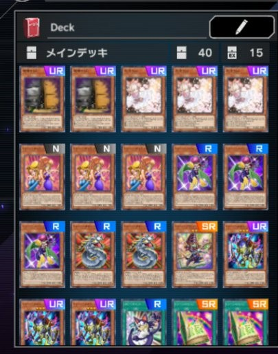
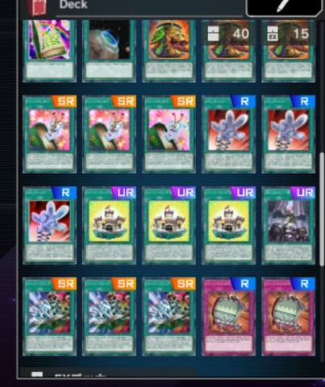
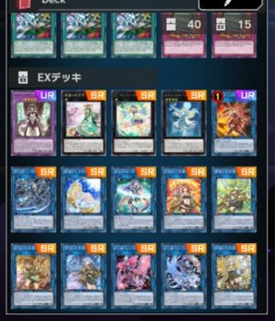

ハロー！読者ボーイ＆ガール！
ミーの名前はペガサス・J・クロフォード
マジック＆ウィザーズの生みの親デース
今回もランクマッチを戦う為に使うトゥーンデッキ
前回のデュエル結果から、10回やって手札コスト以外に全く使わなかった下級を減らして
誘発、汎用札を採用しまシタ
まだこれでも足りないという気はしますが、今回の様子を見て徐々にトライ＆エラーデース それではイッツデュエル！
ミーの名前はペガサス・J・クロフォード
マジック＆ウィザーズの生みの親デース
今回もランクマッチを戦う為に使うトゥーンデッキ



まだこれでも足りないという気はしますが、今回の様子を見て徐々にトライ＆エラーデース それではイッツデュエル！
以下、私の闘いのロードデース
| 1試合 | 方界 | 敗北 |
| 2試合 | 罠ビート | 勝利 |
| 3試合 | イビルツイン | 敗北 |
| 4試合 | 聖天樹 | 敗北 |
| 5試合 | サイバーダーク | 勝利 |
| 6試合 | 魔鍵 | 勝利 |
| 7試合 | デスピア | 敗北 |
| 8試合 | ヌメロン | 敗北 |
| 9試合 | マシンナーズ | 勝利 |
| 10試合 | 方界 | 勝利 |